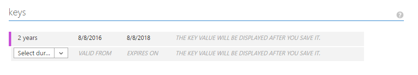
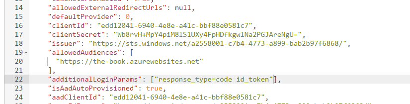
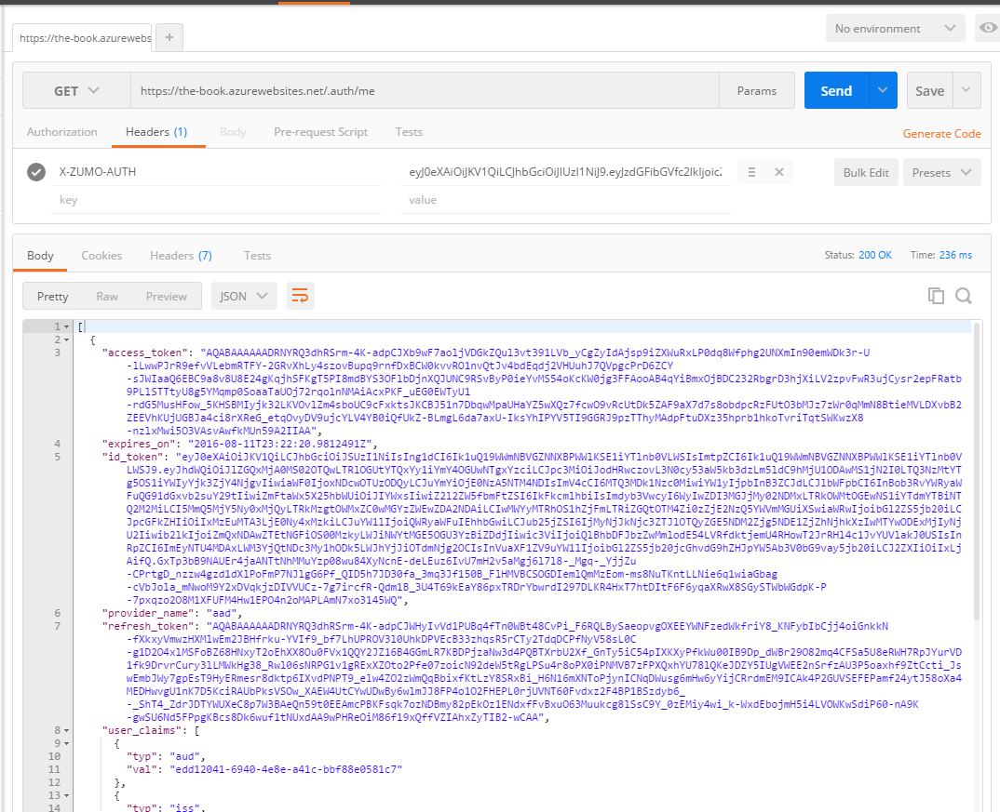

Tokens in Real Apps
Caching Tokens¶
You will notice that we have to log in with every start of the application. The token that is generated has a lifetime that is provided and controlled by the identity provider. Some providers have a relatively short lifetime. For example, Azure Active Directory tokens have a lifetime of 1 hour. Others are incredibly long. Facebook has an expiry time of 60 days.
Irrespective of the lifespan of the token, we will want to store it securely and re-use it when we can. Xamarin has provided a nice component, Xamarin.Auth, that provides such as secure store in a cross-platform manner. It starts with an account store:
// For iOS:
var accountStore = AccountStore.Create();
// For Android:
var accountStore = AccountStore.Create(Context);
We can then store the token with the following:
accountStore.Save(account, "descriptor");
The descriptor is a string that allows us to find the token again. The account (which is an Account object) is
uniquely identified by a key composed of the account's Username property and the descriptor. The Account class is
provided with Xamarin.Auth. Storage is backed by the Keychain on iOS and the KeyStore on Android.
To get the token back, we use the following:
var accounts = accountStore.FindAccountsForService("descriptor");
When we receive the token back from the key store, we will want to check the expiry time to ensure the token has not expired. As a result, there is a little bit more code to caching code than one would expect.
Let's start with the Android version in TaskList.Droid. As with all the other login code, we are adjusting the
LoginAsync() method in Services\DroidLoginProvider.cs:
using System;
using System.Linq;
using System.Text;
using System.Threading.Tasks;
using Android.App;
using Android.Content;
using Microsoft.IdentityModel.Clients.ActiveDirectory;
using Microsoft.WindowsAzure.MobileServices;
using Newtonsoft.Json.Linq;
using TaskList.Abstractions;
using TaskList.Droid.Services;
using TaskList.Helpers;
using Xamarin.Auth;
[assembly: Xamarin.Forms.Dependency(typeof(DroidLoginProvider))]
namespace TaskList.Droid.Services
{
public class DroidLoginProvider : ILoginProvider
{
public Context RootView { get; private set; }
public AccountStore AccountStore { get; private set; }
public void Init(Context context)
{
RootView = context;
AccountStore = AccountStore.Create(context);
}
public async Task LoginAsync(MobileServiceClient client)
{
// Check if the token is available within the key store
var accounts = AccountStore.FindAccountsForService("tasklist");
if (accounts != null)
{
foreach (var acct in accounts)
{
string token;
if (acct.Properties.TryGetValue("token", out token))
{
if (!IsTokenExpired(token))
{
client.CurrentUser = new MobileServiceUser(acct.Username);
client.CurrentUser.MobileServiceAuthenticationToken = token;
return;
}
}
}
}
// Server Flow
await client.LoginAsync(RootView, "aad");
// Store the new token within the store
var account = new Account(client.CurrentUser.UserId);
account.Properties.Add("token", client.CurrentUser.MobileServiceAuthenticationToken);
AccountStore.Save(account, "tasklist");
}
bool IsTokenExpired(string token)
{
// Get just the JWT part of the token (without the signature).
var jwt = token.Split(new Char[] { '.' })[1];
// Undo the URL encoding.
jwt = jwt.Replace('-', '+').Replace('_', '/');
switch (jwt.Length % 4)
{
case 0: break;
case 2: jwt += "=="; break;
case 3: jwt += "="; break;
default:
throw new ArgumentException("The token is not a valid Base64 string.");
}
// Convert to a JSON String
var bytes = Convert.FromBase64String(jwt);
string jsonString = UTF8Encoding.UTF8.GetString(bytes, 0, bytes.Length);
// Parse as JSON object and get the exp field value,
// which is the expiration date as a JavaScript primative date.
JObject jsonObj = JObject.Parse(jsonString);
var exp = Convert.ToDouble(jsonObj["exp"].ToString());
// Calculate the expiration by adding the exp value (in seconds) to the
// base date of 1/1/1970.
DateTime minTime = new DateTime(1970, 1, 1, 0, 0, 0, 0, DateTimeKind.Utc);
var expire = minTime.AddSeconds(exp);
return (expire < DateTime.UtcNow);
}
}
}
There are three new pieces to this code. The first piece is to check to see if there is an existing token in the
KeyStore. If there is, we check the expiry time and then set up the Azure Mobile Apps client with the username and
token from the KeyStore. If there isn't, we do the normal authentication process. If the authentication process is
successful, we reach the second piece, which is to store the token within the KeyStore. If there is an existing entry,
it will be overwritten. Finally, there is a method called IsTokenExpired() whose only job is to check to see if a
token is expired or not. This same code can be used in the Services/iOSLoginProvider.cs. The only difference is
in the AccountStore.Create() call (as discussed earlier).
I'm using an application specific service ID (or descriptor) for this purpose. You could also use an identity provider-based service ID which is especially useful if your mobile client supports multiple identity providers.
Xamarin.Auth only support iOS and Android. We need to turn to an alternate library for token caching on Universal
Windows. The standard library has a package called PasswordVault that can be used identically to the
KeyStore and Keychain libraries. Here is the Universal Windows version of the same code in
Services\UWPLoginProvider.cs:
using System;
using System.Linq;
using System.Text;
using System.Threading.Tasks;
using Microsoft.IdentityModel.Clients.ActiveDirectory;
using Microsoft.WindowsAzure.MobileServices;
using Newtonsoft.Json.Linq;
using TaskList.Abstractions;
using TaskList.Helpers;
using TaskList.UWP.Services;
using Windows.Security.Credentials;
[assembly: Xamarin.Forms.Dependency(typeof(UWPLoginProvider))]
namespace TaskList.UWP.Services
{
public class UWPLoginProvider : ILoginProvider
{
public PasswordVault PasswordVault { get; private set; }
public UWPLoginProvider()
{
PasswordVault = new PasswordVault();
}
public async Task LoginAsync(MobileServiceClient client)
{
// Check if the token is available within the password vault
var acct = PasswordVault.FindAllByResource("tasklist").FirstOrDefault();
if (acct != null)
{
var token = PasswordVault.Retrieve("tasklist", acct.UserName).Password;
if (token != null && token.Length > 0 && !IsTokenExpired(token))
{
client.CurrentUser = new MobileServiceUser(acct.UserName);
client.CurrentUser.MobileServiceAuthenticationToken = token;
return;
}
}
// Server-Flow Version
await client.LoginAsync("aad");
// Store the token in the password vault
PasswordVault.Add(new PasswordCredential("tasklist",
client.CurrentUser.UserId,
client.CurrentUser.MobileServiceAuthenticationToken));
}
bool IsTokenExpired(string token)
{
/* Copy code from DroidLoginProvider */
}
}
}
The PasswordVault replaces the KeyStore (Android) and Keychain (iOS), but the concepts are the same. All three mechanisms provide the basic functionality of storing client secrets securely.
Refresh Tokens¶
Our token cache checks the token to see if it is expired and prompts the user if the token is no longer valid. Since the life of a token is inevitably short (maybe 1 hour), this will still mean that the user is prompted for new credentials most of the time. In addition, we have an issue when the app is running for a long time. What happens if the user leaves the app running for 2 hours? The token we received at the start of the session will be invalid halfway through the session and we will have to restart the app in order to continue. Both of these situations are undesirable from the point of view of the user. Access tokens eventually expire and we need to explicitly deal with this situation.
The first part of the solution is to request a Refresh Token. This is something the identity provider issues when the scope of the request includes an offline scope. Only certain identity providers include the ability to request refresh tokens. For server-flow:
- Google: Append the "access_type=offline" to the request.
- Microsoft Account: Select the wl.offline_access scope in the Azure management portal.
- Azure AD: Configure Azure AD to support access to the Graph API.
Facebook and Twitter do not provider refresh tokens. Once you have the refresh tokens, you can simply call the refresh API in the Azure Mobile Apps SDK to refresh the token.
Info
Refresh Tokens are one area that require special consideration when using Custom Authentication. Just like with the /.auth/me endpoint, you are on your own when it comes to handling token expiry for custom authentication.
Configuring Refresh Tokens¶
You can add the additional information to a Google request with the following code snippet:
client.LoginAsync("google", new Dictionary<string, string>
{
{ "access_type", "offline" }
});
Azure Active Directory is perhaps the trickiest to configure.
- Log on to the Classic Portal.
- Navigate to your Azure Active Directory.
- Go to APPLICATIONS and then your WEB application.
- Go to the CONFIGURE tab.
- Scroll down to the Keys section.

- In the Select duration drop-down, select 2 Years.
- Click on SAVE. The key will be generated for you. Copy the key (you will need it below).
- Go back to the Azure Portal.
- Go to App Services, then your App Service.
- Click on Tools, then Resource explorer, then Go.
- In the Resource Explorer, expand config and select authsettings.
- Click on Edit.
- Set the clientSecret to the key you copied from above.
- Set the additionalLoginParams to
["response_type=code id_token"].

- Click the Read/Write toggle button at the top of the page.
- Click the PUT button.
The next time the user logs into our web app side, there will be a one-time prompt to consent to graph API access. Once granted, the App Service Authentication / Authorization service will start requesting and receiving refresh tokens.
Once you go through this process and re-authenticate, you will be able to see the refresh token in the output of
the /.auth/me endpoint:

Refresh tokens have a different expiry time to the identity token. The refresh token theoretically lives forever, but there are "non-use expiry" times. This varies by identity provider.
- Google: 6 months
- Microsoft Account: 24 hours
- Azure Active Directory: 90 days
In addition, there may be other reasons why a token can be invalidated. For instance, Google provides 25 refresh tokens per user. If the user requests more than the limit, the oldest token is invalidated. You should refer to the OAuth documentation for the identity provider.
Using Refresh Tokens¶
The Azure Mobile Apps Client SDK has a built in method for refreshing tokens for you. It assumes that you are using a supported identity provider (Azure Active Directory, Google or Microsoft Account), and have configured the identity provider to generate the refresh token. To refresh a token, use:
client.RefreshUserAsync();
Tip
If you get the error "You do not have permission to view this directory or page" when accessing the refresh endpoint, there are no refresh tokens for your user in the token store. This could be because the user has yet to re-authenticate (causing a new refresh token to be generated), the provider is not set up to generate refresh tokens or the provider does not support refresh tokens.
We can easily add this to the login process in the platform-specific provider. Rather than provide the same logic
over and over, we can extend the ILoginProvider to do the base operations for us then implement the logic once
in the AzureCloudService. The Abstractions\ILoginProvider.cs interface now looks like this:
using System.Threading.Tasks;
using Microsoft.WindowsAzure.MobileServices;
namespace TaskList.Abstractions
{
public interface ILoginProvider
{
MobileServiceUser RetrieveTokenFromSecureStore();
void StoreTokenInSecureStore(MobileServiceUser user);
Task<MobileServiceUser> LoginAsync(MobileServiceClient client);
}
}
Since the RefreshUserAsync() method is purely contained within the Azure Mobile Apps Client SDK and requires
no changes between platforms, we don't need a special platform-specific version. Each method of the interface
is one of the primitives we have already discussed. For example, the Android version in Services\DroidLoginProvider.cs
now looks like this:
[assembly: Xamarin.Forms.Dependency(typeof(DroidLoginProvider))]
namespace TaskList.Droid.Services
{
public class DroidLoginProvider : ILoginProvider
{
#region ILoginProvider Interface
public MobileServiceUser RetrieveTokenFromSecureStore()
{
var accounts = AccountStore.FindAccountsForService("tasklist");
if (accounts != null)
{
foreach (var acct in accounts)
{
string token;
if (acct.Properties.TryGetValue("token", out token))
{
return new MobileServiceUser(acct.Username)
{
MobileServiceAuthenticationToken = token
};
}
}
}
return null;
}
public void StoreTokenInSecureStore(MobileServiceUser user)
{
var account = new Account(user.UserId);
account.Properties.Add("token", user.MobileServiceAuthenticationToken);
AccountStore.Save(account, "tasklist");
}
public async Task<MobileServiceUser> LoginAsync(MobileServiceClient client)
{
// Server Flow
return await client.LoginAsync(RootView, "aad");
}
#endregion
public Context RootView { get; private set; }
public AccountStore AccountStore { get; private set; }
public void Init(Context context)
{
RootView = context;
AccountStore = AccountStore.Create(context);
}
}
}
The iOS version is practically the same because we are using the common Xamarin.Auth portable library. The difference is in the methods outside of the ILoginProvider interface:
public UIViewController RootView => UIApplication.SharedApplication.KeyWindow.RootViewController;
public AccountStore AccountStore { get; private set; }
public iOSLoginProvider()
{
AccountStore = AccountStore.Create();
}
Finally, the Universal Windows version (in Services\UWPLoginProvider.cs) is significantly different in the
secure store implementation:
[assembly: Xamarin.Forms.Dependency(typeof(UWPLoginProvider))]
namespace TaskList.UWP.Services
{
public class UWPLoginProvider : ILoginProvider
{
public PasswordVault PasswordVault { get; private set; }
public UWPLoginProvider()
{
PasswordVault = new PasswordVault();
}
#region ILoginProvider Interface
public MobileServiceUser RetrieveTokenFromSecureStore()
{
try
{
// Check if the token is available within the password vault
var acct = PasswordVault.FindAllByResource("tasklist").FirstOrDefault();
if (acct != null)
{
var token = PasswordVault.Retrieve("tasklist", acct.UserName).Password;
if (token != null && token.Length > 0)
{
return new MobileServiceUser(acct.UserName)
{
MobileServiceAuthenticationToken = token
};
}
}
}
catch (Exception ex)
{
Debug.WriteLine($"Error retrieving existing token: {ex.Message}");
}
return null;
}
public void StoreTokenInSecureStore(MobileServiceUser user)
{
PasswordVault.Add(new PasswordCredential("tasklist", user.UserId, user.MobileServiceAuthenticationToken));
}
public async Task<MobileServiceUser> LoginAsync(MobileServiceClient client)
{
// Server-Flow Version
return await client.LoginAsync("aad");
}
#endregion
}
}
We can swap out the server-flow Azure Active Directory login method with any of the client-flow, server-flow or custom flows that we have been discussing thus far across all three platform-specific implementations.
The common flow handles all the logic for us. This is the LoginAsync() method in the Services\AzureCloudService.cs
class:
public async Task<MobileServiceUser> LoginAsync()
{
var loginProvider = DependencyService.Get<ILoginProvider>();
client.CurrentUser = loginProvider.RetrieveTokenFromSecureStore();
if (client.CurrentUser != null)
{
// User has previously been authenticated - try to Refresh the token
try
{
var refreshed = await client.RefreshUserAsync();
if (refreshed != null)
{
loginProvider.StoreTokenInSecureStore(refreshed);
return refreshed;
}
}
catch (Exception refreshException)
{
Debug.WriteLine($"Could not refresh token: {refreshException.Message}");
}
}
if (client.CurrentUser != null && !IsTokenExpired(client.CurrentUser.MobileServiceAuthenticationToken))
{
// User has previously been authenticated, no refresh is required
return client.CurrentUser;
}
// We need to ask for credentials at this point
await loginProvider.LoginAsync(client);
if (client.CurrentUser != null)
{
// We were able to successfully log in
loginProvider.StoreTokenInSecureStore(client.CurrentUser);
}
return client.CurrentUser;
}
For full disclosure, I've also moved the IsTokenExpired() method from the platform-specific code to the
shared project, and updated the ICloudService.cs to match the new signature of LoginAsync(). The process
follows the best practices:
- Check for a stored token - if one exists, try to refresh it.
- If the token (that potentially just got refreshed) is not expired, continue using it.
- If not, ask the user for credentials.
- If we get a valid token back, store it in the secure store for next time.
There is another place that we must consider refresh tokens. During a HTTP request to our mobile backend, it is possible that the token has expired since our last request. The request will return a 401 Unauthorized response in this case. We need to trap that and perform a login request. The login request will either refresh the token or prompt the user for new credentials. We can then continue with the request as before.
The Azure Mobile Apps SDK contains a mechanism for hooking into the HTTP workflow using a DelegatingHandler. A
delegating handler is a base type for a HTTP handler that allows us to process the request and response from the
HTTP client object before (and after) it finally get processed. It's used for adding additional headers to the
request or logging the request and response, for example. We are going to use it to validate the response and
re-submit the request (after login) if the request comes back as a 401 Unauthorized.
We start with the adjustment to the Services\AzureCloudService.cs constructor:
public AzureCloudService()
{
client = new MobileServiceClient(Locations.AppServiceUrl, new AuthenticationDelegatingHandler());
if (Locations.AlternateLoginHost != null)
client.AlternateLoginHost = new Uri(Locations.AlternateLoginHost);
}
The AuthenticationDelegatingHandler() is the new piece here. This is the delegating handler that we are going
to implement to handle the re-try logic. I've placed the code in Helpers\AuthenticationDelegatingHandler.cs:
using System.Collections.Generic;
using System.IO;
using System.Net;
using System.Net.Http;
using System.Threading;
using System.Threading.Tasks;
using TaskList.Abstractions;
namespace TaskList.Helpers
{
class AuthenticationDelegatingHandler : DelegatingHandler
{
protected override async Task<HttpResponseMessage> SendAsync(HttpRequestMessage request, CancellationToken cancellationToken)
{
// Clone the request, in case we need to re-issue it
var clone = await CloneHttpRequestMessageAsync(request);
// Now do the request
var response = await base.SendAsync(request, cancellationToken);
if (response.StatusCode == HttpStatusCode.Unauthorized)
{
// The request resulted in a 401 Unauthorized. We need to do a LoginAsync,
// which will do the Refresh if appropriate, or ask for credentials if not.
var user = await ServiceLocator.Instance.Resolve<ICloudService>().LoginAsync();
// Now, retry the request with the cloned request. The only thing we have
// to do is replace the X-ZUMO-AUTH header with the new auth token.
clone.Headers.Remove("X-ZUMO-AUTH");
clone.Headers.Add("X-ZUMO-AUTH", user.MobileServiceAuthenticationToken);
response = await base.SendAsync(clone, cancellationToken);
}
return response;
}
/// <summary>
/// Clone a HttpRequestMessage
/// Credit: http://stackoverflow.com/questions/25044166/how-to-clone-a-httprequestmessage-when-the-original-request-has-content
/// </summary>
/// <param name="req">The request</param>
/// <returns>A copy of the request</returns>
public static async Task<HttpRequestMessage> CloneHttpRequestMessageAsync(HttpRequestMessage req)
{
HttpRequestMessage clone = new HttpRequestMessage(req.Method, req.RequestUri);
// Copy the request's content (via a MemoryStream) into the cloned object
var ms = new MemoryStream();
if (req.Content != null)
{
await req.Content.CopyToAsync(ms).ConfigureAwait(false);
ms.Position = 0;
clone.Content = new StreamContent(ms);
// Copy the content headers
if (req.Content.Headers != null)
foreach (var h in req.Content.Headers)
clone.Content.Headers.Add(h.Key, h.Value);
}
clone.Version = req.Version;
foreach (KeyValuePair<string, object> prop in req.Properties)
clone.Properties.Add(prop);
foreach (KeyValuePair<string, IEnumerable<string>> header in req.Headers)
clone.Headers.TryAddWithoutValidation(header.Key, header.Value);
return clone;
}
}
}
There is no in-built method for cloning a HttpRequestMessage object. Fortunately Stack Overflow provided
an answer that seems to work. Running this code will now pass every single non-login request through the delegating
handler. If we get an Unauthorized at any point, the login flow (which includes an implicit refresh token) will
be triggered.
Info
There are two HTTPClient objects created inside of the MobileServiceClient object. One is for all the non-login
flows and it supports the delegating handlers. However there is another one for login flows. The one for login
flows does not support delegating handlers. This means you don't have to worry about cyclical references within the
delegating handler (where a login flow triggers another login flow).
Logging out¶
There is a dirty little secret within the Azure Mobile Apps Client SDK. Calling LogoutAsync() does not actually
invalidate the token you are using. It simply removes it from the MobileServiceClient context. Don't believe
me? Here is the code:
/// <summary>
/// Log a user out.
/// </summary>
public Task LogoutAsync()
{
this.CurrentUser = null;
return Task.FromResult(0);
}
When you actually think about it, this makes sense. You can get logged in via five different supported identity providers via a web-flow. In this case, you are logging your browser out of the identity provider. Do you really want to log out of Facebook when you log out of your app?
So, how do you log out? You should:
- Call the identity provider logout method (if appropriate). Many identity providers don't provide this.
- Invalidate the token on the mobile backend.
- Remove the token from the local secure cache store.
- Finally, call the
LogoutAsync()method on theMobileServiceClient.
Invalidating the token on the mobile backend.¶
Calling the /.auth/logout endpoint on the Azure App Service mobile backend will remove the entry
on the token store. However, it does not (currently) invalidate the token. The token, if submitted,
will still authorize the user. The refresh token is stored in the token store. The user submitting the
token will be unable to refresh the token. Once the ZUMO token has expired (which happens an hour after
it was created), the logout is complete.
We need to do a HTTP client call for this purpose:
// Invalidate the token on the mobile backend
var authUri = new Uri($"{client.MobileAppUri}/.auth/logout");
using (var httpClient = new HttpClient())
{
httpClient.DefaultRequestHeaders.Add("X-ZUMO-AUTH", client.CurrentUser.MobileServiceAuthenticationToken);
await httpClient.GetAsync(authUri);
}
Removing the token from the local secure cache store.¶
For this part of the process, We can add a new method to the ILoginProvider.cs interface:
void RemoveTokenFromSecureStore();
For Android and iOS, the concrete implementation looks like this:
public void RemoveTokenFromSecureStore()
{
var accounts = AccountStore.FindAccountsForService("tasklist");
if (accounts != null)
{
foreach (var acct in accounts)
{
AccountStore.Delete(acct, "tasklist");
}
}
}
For Universal Windows, the concrete implementation is a bit different:
public void RemoveTokenFromSecureStore()
{
try
{
// Check if the token is available within the password vault
var acct = PasswordVault.FindAllByResource("tasklist").FirstOrDefault();
if (acct != null)
{
PasswordVault.Remove(acct);
}
}
catch (Exception ex)
{
Debug.WriteLine($"Error retrieving existing token: {ex.Message}");
}
}
Implementing a LogoutAsync() method.¶
I've added the following to the ICloudService interface:
Task LogoutAsync();
This has a concrete implementation in Services\AzureCloudService.cs:
public async Task LogoutAsync()
{
if (client.CurrentUser == null || client.CurrentUser.MobileServiceAuthenticationToken == null)
return;
// Log out of the identity provider (if required)
// Invalidate the token on the mobile backend
var authUri = new Uri($"{client.MobileAppUri}/.auth/logout");
using (var httpClient = new HttpClient())
{
httpClient.DefaultRequestHeaders.Add("X-ZUMO-AUTH", client.CurrentUser.MobileServiceAuthenticationToken);
await httpClient.GetAsync(authUri);
}
// Remove the token from the cache
DependencyService.Get<ILoginProvider>().RemoveTokenFromSecureStore();
// Remove the token from the MobileServiceClient
await client.LogoutAsync();
}
This does three of the four providers. If your identity provider supports an app-level logout, then you
should call that where indicated. This is probably going to be platform-specific code, so you will want
to add a method to the ILoginProvider.cs interface and add a concrete implementation to each platform
project.
I've also added a logout button to my Pages\TaskList.xaml (view code) and added the event handler
for the logout button to the ViewModels\EntryPageViewModel.cs (view code).